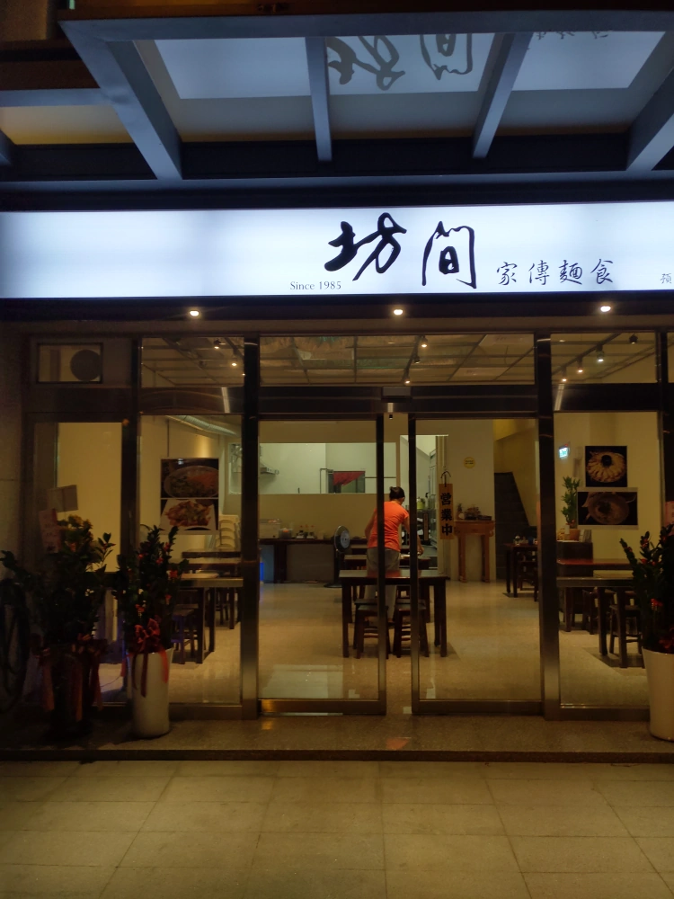
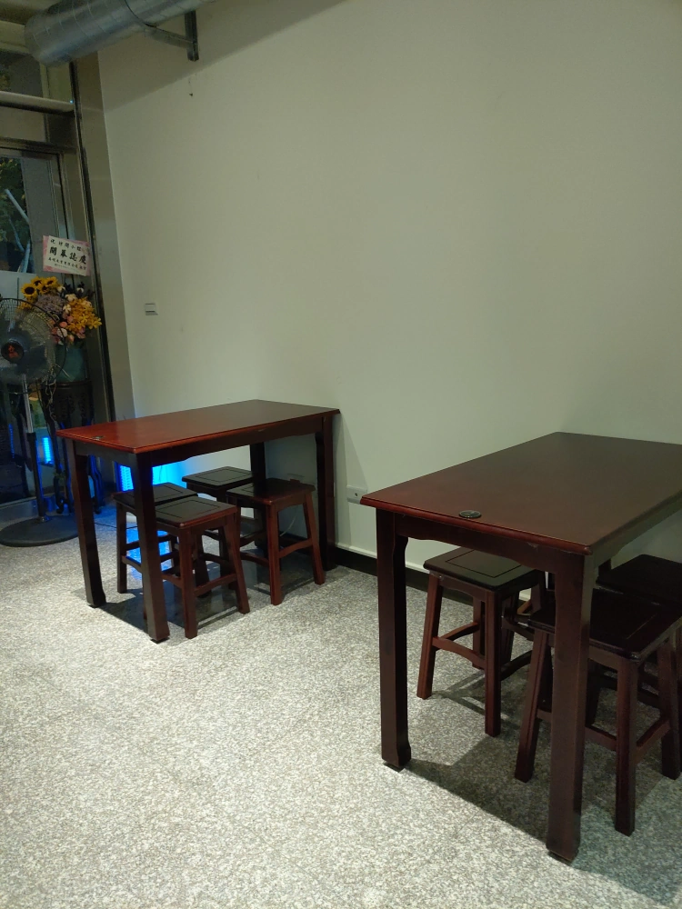
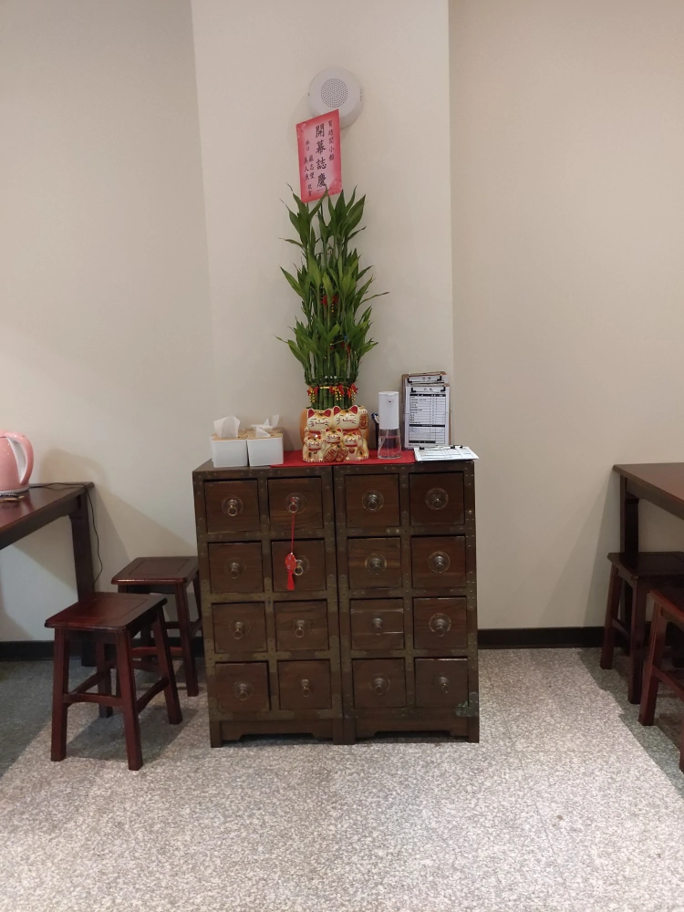
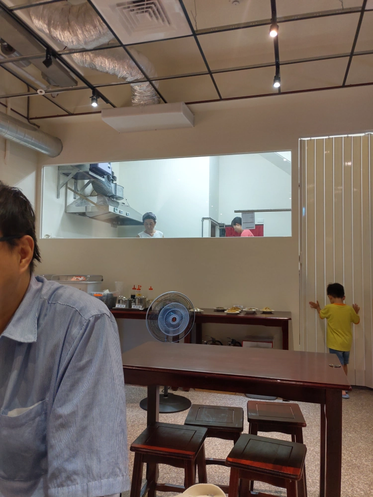
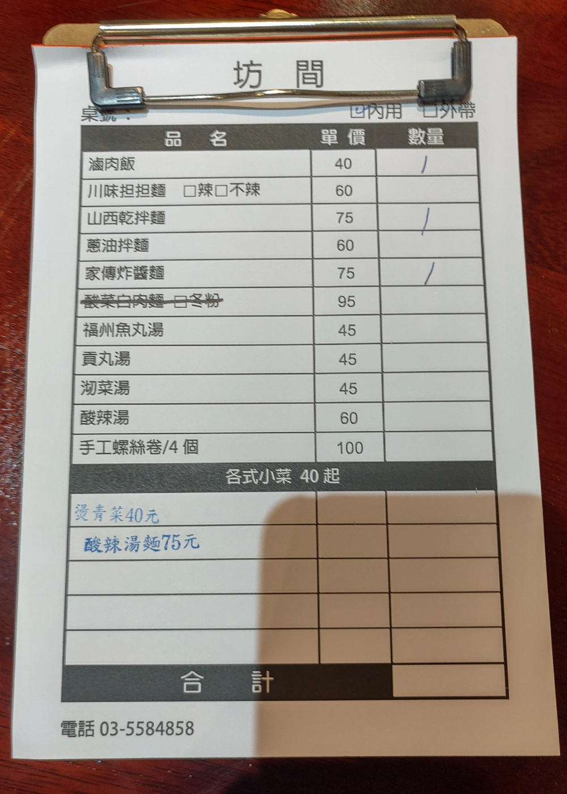
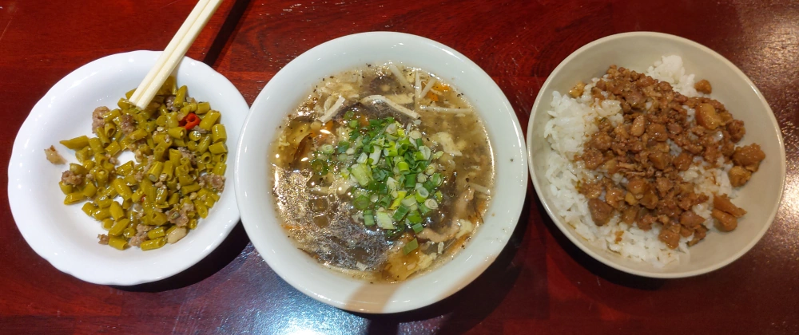
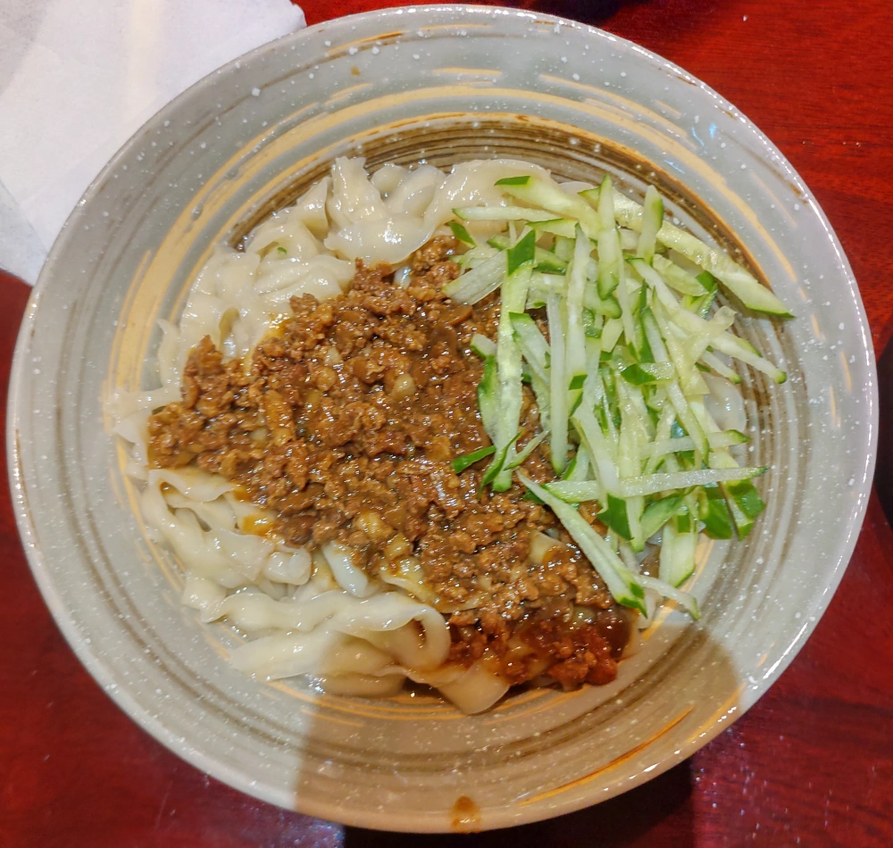
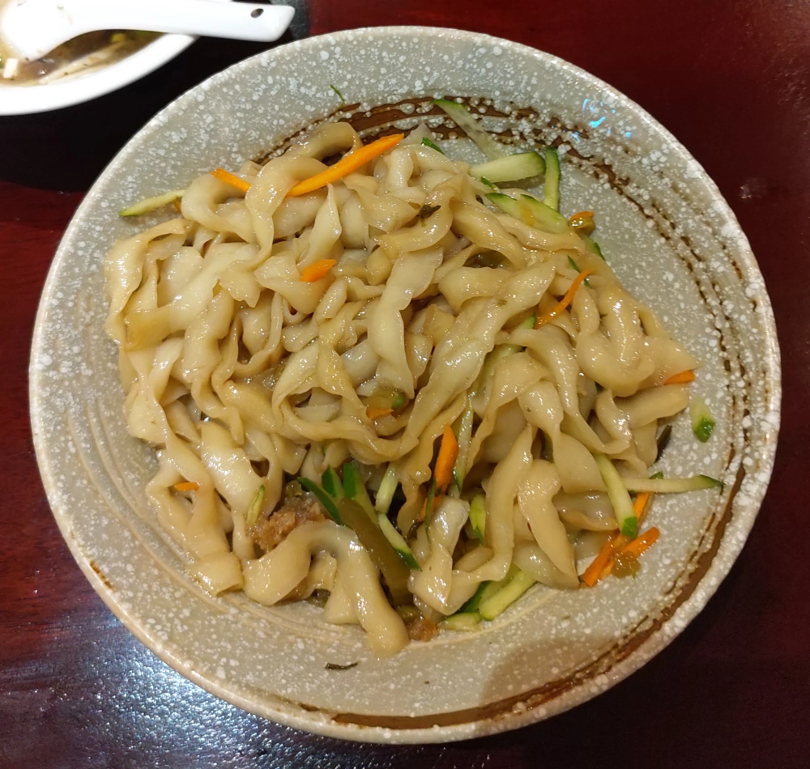

[竹北] 坊間家傳麵食(坊間小館)
| 餐廳名稱: | 坊間家傳麵食(坊間小館) |
|---|---|
| 地 址: | 新竹縣竹北市勝利九街66號 |
| 營業時間: | 週一 ~ 週日 11:30~14:00 17:00~21:00 |
| 電話 : | 03 558 4858 |
坊間小館 曾經是竹北的美食重鎮，店老闆李紹唐李爺曾經獲得兩岸廚藝比賽冠軍，許多人都尊稱食神。 最開始在大台北中永和一帶，就已經是人潮絡繹不絕的餐廳，據說是為了退休搬來竹北，就是坊間小館。
坊間小館店裡除了最出名的酸菜白肉鍋，還有許多涼菜、熱炒，像是 松柏長青、左宗棠雞、豆腐燒黃魚、山東燒雞、百花油條等，道道都是名菜。 李爺 也有一小段時間跟龍涎居竹北店合作弄個店中店叫 “李爺食堂” ，招牌菜滷排骨，先炸再滷，據說要20道工序， 非常好吃。只是後來也停了。
最新的就是這間勝利九街的坊間家傳麵食，很無奈，沒有大菜了，只有飯、麵。出名的酸菜白肉鍋則是需要預定。 畢竟還是有一點點崇拜李爺，所以變成麵食館，還是衝一下，一探究竟。
店門口，就在 Cook Table 旁邊。這附近需要找路邊停車位，還算荒涼，努力找應該會有停車位。 
店內就 3 乘 3 ，共9張4人桌。這樣稍微不務實，吃麵常常是一兩個人迅速吃一下，應該要規劃一些雙人桌，比較好。 
印象中，文平路舊店裡面看過這個櫃子。 
又是一個無奈，請女王照一下廚房，連本貓也入鏡了，請各位多忍耐。 沒看到李爺，由李奶奶下廚，女兒當幫手。廚房前面小桌子 放著小菜，碗筷、醬料等。 
菜單如下，是有點特色，滷肉飯算台灣小吃，川味擔擔麵來自四川，山西乾拌麵自然是來自山西，蔥油拌麵 是 江蘇小吃，家傳炸醬麵 是北京版的炸醬麵。
這麼多地方的道地小吃是不錯，可是都是絞肉煮出來的，萬一有人要大塊肉怎辦呢?

最左邊是李爺著名的小菜，炒酸豆，重口味，好吃。 中間是酸辣湯，中規中矩。 右邊是滷肉飯，也是中規中矩。 
炸醬麵，說是北京版本，搞得跟台式炸醬麵也差不多，只有炸醬跟小黃瓜。 北京人稱麵上面擺的東西叫菜碼或麵碼，就是配菜的意思。 菜碼只有小黃瓜絲太少了，講究的北京炸醬麵要八種以上。 可以到 Youtube 找 “老白 炸醬麵”，老白是一位老北京的美食評論員，拍了很多美食，包括北京炸醬麵。 不過吃起來，那個炸醬倒是真的是北京風格，蠻好吃的，就是菜碼太少。麵體不錯。 
這碗是山西乾拌麵，菜碼除了小黃瓜絲，還有胡蘿蔔絲、酸菜、肉末，味道以酸味為主， 跟台式烏醋麵有異曲同工之妙。 酸味來源是鎮江醋，老闆女兒有提示說調味料區有鎮江醋可以加。 我吃幾口後，真的跑去加一點鎮江醋，酸味更濃了。 不過我還是覺得炸醬麵好吃一點點，但也差不了太多。 
我覺得只靠這 四種麵、一種飯 開店會很累吧，應該也不少人想點那個菜單劃掉的酸菜白肉麵 回味一下，畢竟有一些是一個人或是臨時起意來吃個麵， 不可能預約酸菜白肉鍋。當年那麼多名菜，應該可以挑幾道好做的，最好是肉多的，放在菜單裡，單吃麵不夠的人，還能加點一兩道熱炒加菜， 這樣不是挺好的嗎? 當年李爺食堂的滷排骨、滑蛋牛肉飯 也可以拿出來賣啊。只是店家可能還在思考經營的方向，這次規模變小了，祝福他們了。